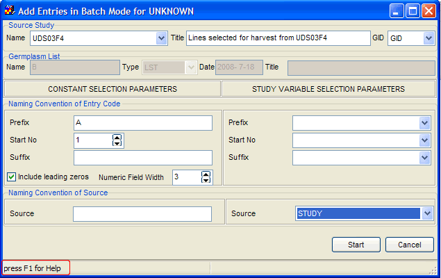
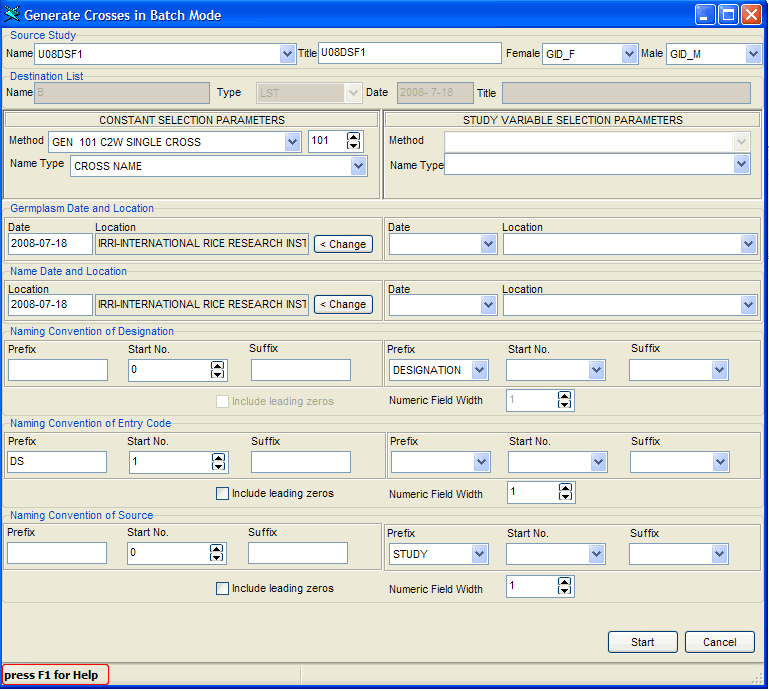
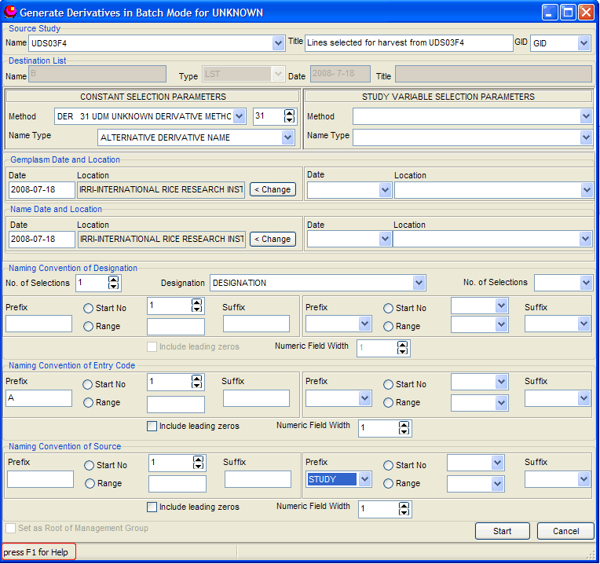

Talk:ICIS Help 5.5
From ICISWiki
Contents |
Batch Mode Processing
A number of entries can be processed in batch mode instead of one at a time through the batch mode processes. There are two types of batch mode: the first type generates a new list by having the source of information from a study in the DMS; the other type generates a new list by having an existing list as a source of information. In either case, resulting entries of a new list can either be already existing germplasm, or new germplasm.
Data Source is a DMS Study. A DMS study must have been previously loaded to use study information to generate a new list. The study must contain at least one factor whose scale is defined as GID.
Note: In the batch processes that use a DMS study as its source, the study MUST contain a factor whose values contain GID values. The corresponding scale of this factor must have been defined as GID. Otherwise, the process will not continue.
Three batch processes use a DMS study as its source of information for generating a list entry:
Add Entries in Batch Mode,
Generate Crosses in Batch Mode, and
Generate Derivatives in Batch Mode.
Add Entries in Batch Mode [B+]
Show me how...
If a study contains germplasm information, i.e., name or GID, and a new list is desired, click the [B+] speed button above the Browse window. The Add Entries in Batch Mode window, as in Figure 1.11.1 appears.
Select the DMS study containing the desired germplasm entries from the drop down list. The factors in the study appear in the GID factor. In the GID factor field, specify the factor from the drop down list containing GID information. [Note: A specified GID factor must have GID as its scale. Otherwise, the process will not continue.]
Prescribe a destination list name and its characteristics, if desired. If a list is currently open in the Edit window, a default value appears in the destination list as the currently open Edit list; otherwise, if no Edit list is opened, no default value appears.
A new entry may or may not have an entry code or source value. An entry code or source value can either be a constant value, or a data value from the specified study.
If a value is variable, data is read from the study. The factors containing a value must be specified in the fields under the DMS VARIABLE COLUMN. To assign an entry code by reading data from the DMS, specify the factor containing the entry code value in the entry code field. Likewise, to assign a source value by reading data from the DMS, specify the factor containing the source value in the source field.
To specify an entry code name convention, specify the prefix and suffix values in the fields under the SPECIFY CONSTANT PARAMETERS. Specify a start number for the entry code value. If a start number is specified, the next value is automatically incremented. An entry code is assigned as: C1 n C2.
Figure 1.11.1 Add Entries in Batch Mode

If a source is a constant, specify the source value under the SPECIFY CONSTANT PARAMETERS in the source field. All new entries will have the same source value.
When all desired variables have been specified, click <Start>. If the destination list is already existing, the query ‘Germplasm list already exists. Append entries to existing list?’ Click <Yes> to append entries to the existing list; click <No> to specify another list name.
If Auto Commit is not on, the query ‘N entries were processed. Save changes?’ appears after all entries have been processed. Click <Yes> to save; otherwise, click <No> to save at a later time.
To close the window, click <Close>.
To cancel a batch process, click <Close>. [Note: A batch process cannot be cancelled once it has started processing the entries.]
Generate Crosses in Batch Mode [Bx]
Show me how...
New crosses can be generated in batch mode from information contained in a DMS study. The study must contain separate factors corresponding to a female GID and a male GID to generate new crosses. Click the [Bx] speed button above the Browse window. The Generate Crosses in Batch Mode window appears, similar to Figure 1.11.2 appears.
Select the DMS study which contain the necessary information. The factors of the selected study appear in the female GID and male GID fields. Specify the factor that contains the female GID; similarly, specify the factor containing the male GID. [Note: The specified female GID factor and male GID factors must have GID as its scale to continue.]
Specify the destination list and its characteristics.
Specify information for germplasm characteristics, which can either be a constant value, or a variable. Information for the germplasm method and name type MUST be known; all other information is optional. If the new crosses in the current process have the same breeding method, this may be specified as a constant by selecting the breeding method from the drop down list under the SPECIFY CONSTANT PARAMETERS column. If the method is a variable, select the DMS variable name containing information corresponding to breeding method. Similarly, if name type is constant, specify its value under the SPECIFY CONSTANT PARAMETERS column; otherwise, select the variable containing the name type value. If there is no available information corresponding to breeding method and name type, the entry without this information will not be processed. Specify other germplasm characteristics, either as a constant or variable, if known.
IMPORTANT: All of the following MUST have been defined as numeric variables in the study if the information is to be retrieved here. Otherwise, corresponding values will not be allowed to be selected.
- Breeding method: A valid value must be an existing breeding method number in the METHODS table;
- Female/Male GID: A valid value must be an existing germplasm GID in the GERMPLSM table;
- Name Type: A valid value must be an existing name type value, defined in the UDFLDS table;
- Germplasm/Name Location: A valid value must correspond to an existing location ID value in the LOCATION table;
- Germplasm/Name Date: A valid date value must have been entered in the format YYYYMMDD;
- Germplasm/Name Reference: A valid value must be an existing value in the BIBREFS table.
Figure 1.11.2 Generate Crosses in Batch Mode

A name convention can be specified for new crosses. If the name convention is a constant, specify their values in their appropriate fields. A start number can be specified, which automatically increments as each new cross is added. Option to include leading zeros and specify numeric field width size are provided as well. The resulting germplasm name would be C1nC2 where C1 is the prefix, n is the number (if any) with or without leading zeros, and C2 is the suffix.
[Note: Only for Naming Convention of Designation must set STANDARDIZED=NO if include leading zeros feature is checked.] (see 1.10 Selections List - step 5)[29]
If there is no name convention, either from the DMS or as constants, the name of a new cross is the corresponding cross expansion based on the specified parents.
A list entry can also have a corresponding value for entry code and source. To specify entry code and source value, follow the steps described in (1) above.
When all desired variables have been specified, click <Start>. Follow the steps described above.
Generate Derivatives in Batch Mode [B-]
Show me how...
New derivatives can be generated in batch mode from information contained in a DMS study. The study must contain a factor whose scale is GID. A source germplasm name factor may also be specified if a new derivative name is from the source germplasm name. The source germplasm name may not necessarily be an existing name of the source germplasm GID. Click the ‘B-’ speed button above the Browse window. The Generate Derivatives in Batch Mode window appears, similar to Figure 1.11.3 appears.
Each component of the actual derivative process to be applied to each entry can be specified in one of two ways: either as a constant, or as a variable in a DMS study. If any elements are to be specified as variates, a study must exist in DMS with units indexed by a factor labeled by GIDs corresponding to the GIDs in the source list and variates containing the component values. Select the study containing the variates from the study name list, and then specify the variates in the component fields.
Figure 1.11.3 Generate Derivatives in Batch Mode

Data Source is an Existing Germplasm List. A new list can be generated in batch mode where information of the entries in the new list is from an existing germplasm list. The Generate a GID in Batch Mode and Matrix Crossing Tool are batch processes that generate new lists whose source of information is from existing lists.
- Info about ICIS Help 5.5 not yet available, for previous version see: ICIS Help 5.4